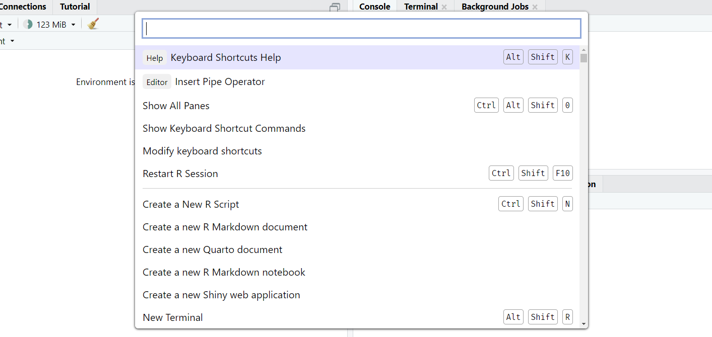

# Header ------------------------------------------------------------------
## Section ----
### Subsection ----RStudio Tips and Tricks
learning
R
Coffee & Coding
In a recent Coffee & Coding session we chatted about tips and tricks for RStudio, the popular and free Integrated Development Environment (IDE) that many Strategy Unit analysts use to write R code.
RStudio has lots of neat features but many are tucked away in submenus. This session was a chance for the community to uncover and discuss some hidden gems to make our work easier and faster.
Official guidance
Posit is the company who build and maintain RStudio. They host a number of cheatsheets on their website, including one for RStudio. They also have a more in-depth user guide.
Command palette
RStudio has a powerful built-in Command Palette, which is a special search box that gives instant access to features and settings without needing to find them in the menus. Many of the tips and tricks we discussed can be found by searching in the Palette. Open it with the keyboard shortcut Ctrl + Shift + P.

For example, let’s say you forgot how to restart R. If you open the Command Palette and start typing ‘restart’, you’ll see the option ‘Restart R Session’. Clicking it will do exactly that. Handily, the Palette also displays the keyboard shortcut (Control + Shift + F10 on Windows) as a reminder.
As for settings, a search for ‘rainbow’ in the Command Palette will find ‘Use rainbow parentheses’, an option to help prevent bracket-mismatch errors by colouring pairs of parentheses. What’s nice is that the checkbox to toggle the feature appears right there in the palette so you can change it immediately.
I refer to menu paths and keyboard shortcuts in the rest of this post, but bear in mind that you can use the Command Palette instead.
Options
In general, most settings can be found under Tools > Global Options… and many of these are discussed in the rest of this post.
But there’s a few settings in particular that we recommend you change to help maximise reproducibility and reduce the chance of confusion. Under General > Basic, uncheck ‘Restore .Rdata into workspace at startup’ and select ‘Never’ from the dropdown options next to ‘Save workspace to .Rdata on exit’. These options mean you start with the ‘blank slate’ of an empty environment when you open a project, allowing you to rebuild objects from scratch1.
Keyboard shortcuts
You can speed up day-to-day coding with keyboard shortcuts instead of clicking buttons in the interface.
You can see some available shortcuts in RStudio if you navigate to Help > Keyboard Shortcuts Help, or use the shortcut Alt + Shift + K (how meta). You can go to Help > Modify Keyboard Shortcuts… to search all shortcuts and change them to what you prefer2.
We discussed a number of handy shortcuts that we use frequently3. You can:
- re-indent lines to the appropriate depth with Control + I
- reformat code with Control + Shift + A
- turn one or more lines into a comment with Control + Shift + C
- insert the pipe operator (
%>%or|>4) with Control + Shift + M5 - insert the assignment arrow (
<-) with Alt + - (hyphen) - highlight a function in the script or console and press F1 to open the function documentation in the ‘Help’ pane
- use ‘Find in Files’ to search for a particular variable, function or string across all the files in your project, with Control + Shift + F
Themes
You can change a number of settings to alter RStudio’s theme, colours and fonts to whatever you desire.
You can change the default theme in Tools > Global Options… > Appearance > Editor theme and select one from the pre-installed list. You can upload new themes by clicking the ‘Add’ button and selecting a theme from your computer. They typically have the file extension .rsthemes and can be downloaded from the web, or you can create or tweak one yourself. The {rsthemes} package has a number of options and also allows you to switch between themes and automatically switch between light and dark themes depending on the time of day.
In the same ‘Appearance’ submenu as the theme settings, you can find an option to change fonts. Monospace fonts, ones where each character takes up the same width, will appear here automatically if you’ve installed them on your computer. One popular font for coding is Fira Code, which has the special property of converting certain sets of characters into ‘ligatures’, which some people find easier to read. For example, the base pipe will appear as a rightward-pointing arrow rather than its constituent vertical-pipe and greater-than symbol (|>).
Panes
Layout
The structural layout of RStudio’s panes can be adjusted. One simple thing you can do is minimise and maximise each pane by clicking the window icons in their upper-right corners. This is useful when you want more screen real-estate for a particular pane.
You can move pane loations too. Click the ‘Workspace Panes’ button (a square with four more inside it) at the top of the IDE to see a number of settings. For example, you can select ‘Console on the right’ to move the R console to the upper-right pane, which you may prefer for maximimsing the vertical space in which code is shown. You could also click Pane Layout… in this menu to be taken to Tools > Global Options… > Pane layout, where you can click ‘Add Column’ to insert new script panes that allow you to inspect and write multiple files side-by-side.
Background jobs
Perhaps an under-used pane is ‘Background jobs’. This is where you can run a separate R process that keeps your R console free. Go to Tools > Background Jobs > Start Background Job… to expose this tab if it isn’t already listed alongside the R console.
Why might you want to do this? As I write this post, there’s a background process to detect changes to the Quarto document that I’m writing and then update a preview I have running in the browser. You can do something similar for Shiny apps. You can continue to develop your app and test things in the console and the app preview will update on save. You won’t need to keep hitting the ‘Render’ or ‘Run app’ button every time you make a change.
Magic wand
There’s a miscellany of useful tools available when you click the ‘magic wand’ button in the script pane.

This includes:
- ‘Rename in Scope’, which is like find-and-replace but you only change instances with the same ‘scope’, so you could select the variable
x, go to Rename in Scope and then you can edit all instances of the variable in the document and change them at the same time (e.g. to rename them) - ‘Reflow Comment’, which you can click after higlighting a comments block to have the comments automatically line-break at the maximum width
- ‘Insert Roxygen Skeleton’, which you can click when your cursor is inside the body of a function you’ve written and a {roxygen2} documentation template will be added above your function with the
@paramsargument names pre-filled
Along with ‘Comment/Uncomment Lines’, ‘Reindent Lines’ and ‘Reformat Lines’, mentioned above in the keyboard shortcuts section.
Wrapping up
Time was limited in our discussion. There are so many more tips and tricks that we didn’t get to. Let us know what we missed, or what your favourite shortcuts and settings are.
Footnotes
For the same reason it’s a good idea to restart R on a frequent basis. You may assume that an object
xin your environment was made in a certain way and contains certain information, but does it? What if you overwrote it at some point and forgot? Best to wipe the slate clean and rebuild it from scratch. Jenny Bryan has written an explainer.↩︎You can ‘snap focus’ to the script and console panes with the pre-existing shortcuts Control + 1 and Control + 2. My next most-used pane is the terminal, so I’ve re-mapped the shortcut to Control + 3.↩︎
The classic shortcuts of select-all (Control + A), cut (Control + X), copy Control + C, paste (Control + V), undo (Control + Z) and redo (Control + Shift + Z) are all available when editing.↩︎
Note that you can set the default pipe to the base-R version (
|>) by checking the box at Tools > Global Options… > Code > Use native pipe operator↩︎Probably ‘M’ for {magrittr}, the name of the package that contains the
%>%incarnation of the operator.↩︎